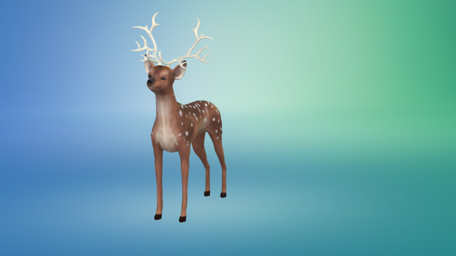

by Stutterguy
Sims 4 Cats and Dogs CC 2
Something to personalize your pets that little bit extra.
The following items work with all pets. Please not that due to the extensive customization options, some items may not sit on your pets head correctly, particularly small breeds like chihuahua, they may also clip into the neck. Also, because the hats remove your dogs ears, you will need to select an upright ear shape. Don’t worry, this wont really affect your game as the ears will not be visible anyway. Once I’ve figured a way of preventing this, I will update the hats.
Antlers
The cat antlers currently only allow you to have two types of ears. Standard and folded. Once I’ve discovered a work around, these will be updated.
The deer shown in the preview image is taken from the Gallery. To give the deer a red nose, enter detail paint mode.